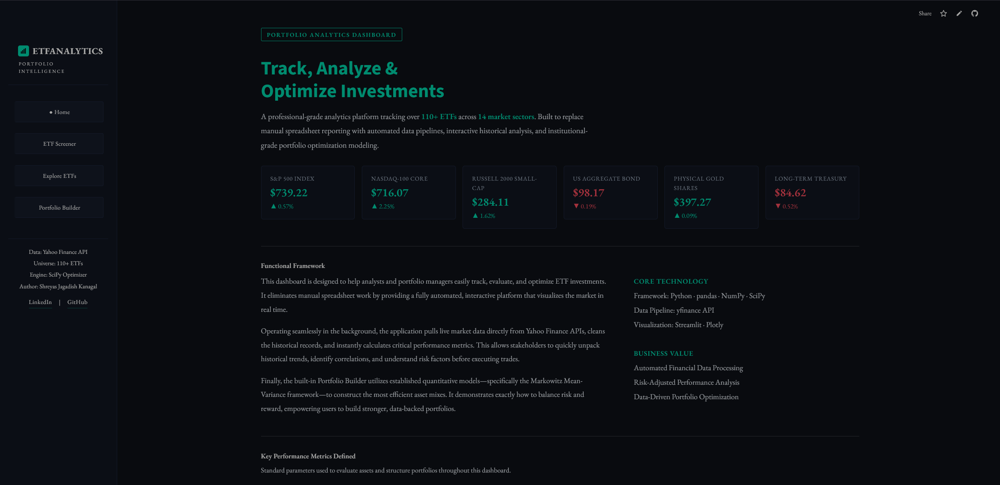
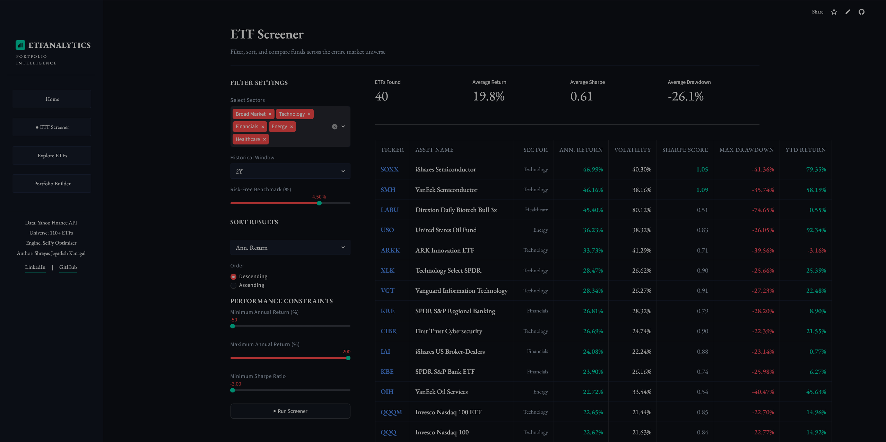
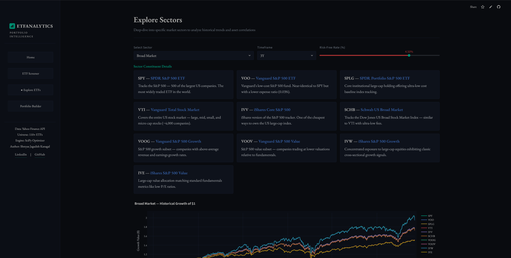
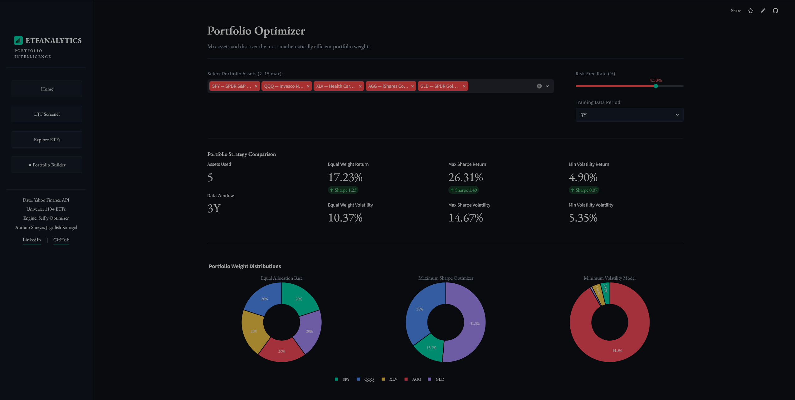

Building with
Economics & Business Analytics student at UT Dallas. I turn messy datasets into clean pipelines, actionable dashboards, and live analytics tools, with a focus on finance and investment data.
About
I am a senior at UT Dallas studying Economics with a minor in Business Intelligence & Analytics (GPA 3.94). My focus is on the intersection of finance and data: building systems that turn raw numbers into decisions people can act on.
I work across the full analytics stack: SQL data modeling, Python automation, and dashboards in Power BI, Tableau, and Streamlit. Most of my personal work sits squarely in financial data: pipelines, investment analytics, and FP&A-style analysis.
I am actively pursuing internships & roles in Business and Financial Analytics to drive data-driven decision making.
Outside of work
Projects




Skills
Experience
Education
Contact
I am currently pursuing Business & Financial Analyst roles to drive data-backed investment and operational strategies. If you're building a team or just want to talk about data, finance, or cool projects, my inbox is always open. Let’s connect!